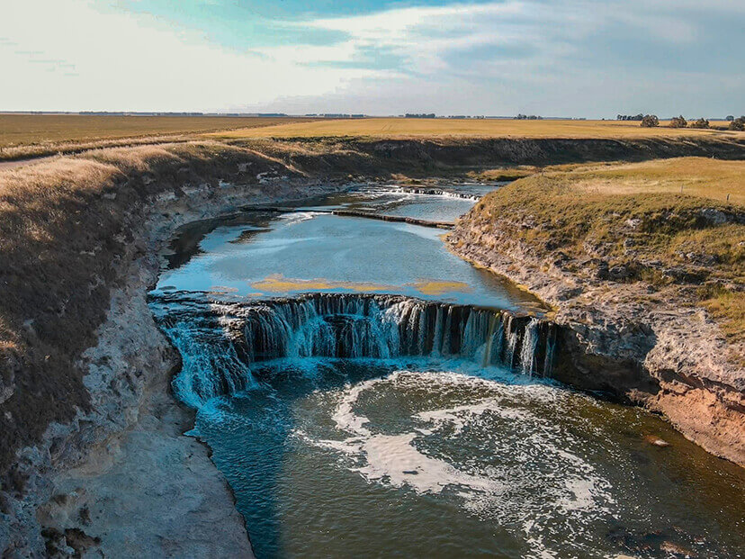

Información
El Balneario Marisol es una localidad balnearia argentina, del Partido-Municipio de Coronel Dorrego, ubicado en la zona costera del interior de la Provincia de Buenos Aires. Cuenta con servicios médicos, restaurantes, mercados, anfiteatro, plaza, mirador hacia el rio y farmacia. Es un lugar especial para el descanso donde se aprecia la naturaleza y el silencio, solo interrumpido por el canto de los pajaros y el sonido del mar. Es un buen lugar para practicar la pesca deportiva (marítima y de río), actividades náuticas y tomar vacaciones allí en un ambiente muy tranquilo, explorando los sitios turísticos de la zona. El río sirve para el esparcimiento y contemplación, con varios sitios preparados para visitar, como:


